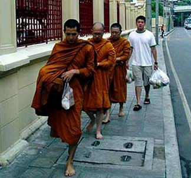

|

เมื่อพูดถึง
เด็กวัด หลายคนคงจะนึกถึงภาพของเด็กชาย หรือวัยรุ่นชายที่ถือย่าม
ปิ่นโต หรือถุงกับข้าว เดินตามหลังพระภิกษุ ที่ออกบิณฑบาตตอนเช้า
และคอยหยิบอาหารที่เต็มออกจากบาตร แต่เด็กหรือวัยรุ่นพวกนี้ มาจากไหนและมีความเป็นอยู่อย่างไร
อาจจะอยู่ห่างจากความคิด และวิถีการดำเนินชีวิตของเรา อย่างไรก็ดี
วัดและพุทธศาสนิกชน เป็นสิ่งที่แยกกันไม่ออก
ดังนั้น
กลุ่มประชาสัมพันธ์ สำนักงานคณะกรรมการวัฒนธรรมแห่งชาติ
กระทรวงวัฒนธรรม จึงอยากจะขอนำผลงานวิจัยบางส่วน จากเรื่อง วัดกับเยาวชน
: บทบาทของวัดในการส่งเสริมให้ศิษย์วัด ประสบความสำเร็จในชีวิต
ของ ประภาพร ชุลีลัง ซึ่งได้รับทุนอุดหนุนการวิจัยจากสวช. มาเสนอให้ทราบถึงบทบาทของวัด
ในอีกแง่มุมหนึ่ง นอกเหนือไปจากการเป็นศาสนสถาน ที่ใช้ประกอบพิธีกรรม
รวมถึงการดำรงชีวิตของเด็กวัด หรือศิษย์วัด ที่หลายคนอาจจะยังไม่เคยรู้
นับแต่อดีตจนปัจจุบัน
วัด นับเป็นศูนย์กลางของสังคม และตัวแทนของสถาบันทางพุทธศาสนา
ที่อยู่คู่กับสังคมไทยมาเป็นเวลาช้านาน นอกจากจะเป็นที่พำนัก ของพระภิกษุผู้สืบทอดพระพุทธศาสนาแล้ว
วัดยังเป็นองค์กร ที่ทำหน้าที่ทางสังคม ในรูปแบบอื่นๆ อีกมากมาย
เช่น เป็นศูนย์กลางทางด้านการศึกษา เป็นที่พึ่งทางใจ สโมสร สถานบันเทิง
ที่สอนวิชาชีพ ที่พักคนเดินทาง และฌาปนสถาน เป็นต้น กล่าวได้ว่า
วัดมีบทบาทเกี่ยวข้อง และผูกพัน รวมทั้งมีอิทธิพล ต่อชีวิตความเป็นอยู่ของคนไทย
และสังคมไทยเป็นอย่างยิ่ง
ในสมัยโบราณ
ที่ยังไม่มีโรงเรียนเช่นปัจจุบัน เด็กผู้ชายมักถูกส่งเข้ามาอยู่ที่วัด
เพราะวัดเป็นสถานที่แห่งเดียว ที่จะให้การศึกษาเล่าเรียน ศิลปะวิทยาการแขนงต่างๆ
โดยมีพระสงฆ์ซึ่งเป็นผู้มีความรู้สูงกว่าชาวบ้าน เป็นผู้ประสิทธิประสาทวิชาความรู้
ให้ทั้งทางโลกและทางธรรม รวมถึงการอบรมจรรยามารยาท ดังนั้น บุคคลไม่ว่าจะมีสถานภาพ
ทางเศรษฐกิจเช่นไร ถ้าต้องการให้บุตรหลานได้เล่าเรียน ก็จะนำไปฝากให้อยู่ที่วัด
เป็นลูกศิษย์วัด คอยปรนนิบัติรับใช้พระภิกษุสงฆ์ และเมื่อมีอายุพอสมควร
ก็จะบรรพชาเป็นสามเณร และเรียนธรรมชั้นสูงขึ้นไป ครั้นพออายุครบ
ก็จะอุปสมบทเป็นพระภิกษุ ทำให้เด็กชายส่วนใหญ่อ่านออกเขียนได้
มีความรู้ทางศีลธรรม จริยธรรม และหลักธรรมในทางพุทธศาสนา ถือเป็นเกียรติของตนและครอบครัว
และยังเป็นที่ยอมรับ ยกย่องของสังคม ซึ่งสมัยก่อนจะถือว่า คนที่บวชเรียนแล้วเป็น
คนสุก คือ ผ่านการอบรมบ่มนิสัยมาแล้ว และจะเรียกคำนำหน้าผู้ที่สึกจากพระว่า
ทิด เช่น ทิดขาว เป็นต้น
ปัจจุบัน
แม้ว่าบทบาทของวัด จะลดน้อยลงไปกว่าเดิม ในเรื่องการให้การศึกษา
เพราะโรงเรียนได้แยกจากวัดแล้วก็ตาม แต่หน้าที่การให้ความสงเคราะห์
ในเรื่องที่อยู่อาศัยแก่เด็กหรือเยาวชน ที่มาศึกษาเล่าเรียนก็ยังมีอยู่
โดยเฉพาะเยาวชนจากส่วนภูมิภาค ซึ่งที่ผ่านมา บุคคลสำคัญที่มีชื่อเสียง
และมีบทบาทในสังคมจำนวนไม่น้อย ก็เริ่มต้นมาจากการใช้ชีวิตอยู่ในวัด
โดยมีพระสงฆ์เป็นผู้ให้ความอนุเคราะห์
เด็กวัด หรือศิษย์วัดในสมัยก่อน
มักจะเป็นลูกหลานที่พ่อแม่ ผู้ปกครองส่งมาศึกษาหาความรู้ กับพระภิกษุสงฆ์
ส่วนสมัยนี้ เด็กวัดมีเพิ่มขึ้นหลายประเภท เช่น เด็กเร่ร่อน ถูกทอดทิ้ง
ไม่มีบิดามารดา เด็กที่ผู้ปกครองฐานะยากจน เด็กที่พ่อแม่มีลูกหลายคน
และเลี้ยงไม่ไหว เด็กที่พ่อแม่เสียชีวิตไปแล้ว หรือไปทำงานต่างถิ่น
เด็กที่มาจากครอบครัวแตกแยก รวมถึงชาวเขาเผ่าต่างๆ จากชายแดนที่ฐานะยากจน
เป็นต้น
สำหรับผลวิจัยที่ผู้วิจัย
ได้เลือกวัดที่เป็นกรณีศึกษา 5 แห่ง คือ วัดราชบพิธสถิตมหาสีมาราม,
วัดสุทัศนเทพวรารามราชวรมหาวิหาร, วัดชนะสงคราม, วัดราชาธิวาส
และวัดพระศรีมหาธาตุวรมหาวิหาร ด้วยการศึกษาจากเอกสาร การบอกเล่า
การสังเกตและการสัมภาษณ์ ทั้งพระภิกษุและศิษย์วัด พบว่า วัตถุประสงค์
ของการมาเป็นศิษย์วัด ส่วนใหญ่ก็ยังคล้ายกับอดีต คือ มาอยู่เพื่อการศึกษาเล่าเรียน
ในสถาบันการศึกษา ที่ตั้งอยู่กรุงเทพฯ โดยการจะมาเป็นศิษย์วัดใดได้นั้น
จำเป็นจะต้องมีบุคคล ที่อาจจะเป็นพ่อแม่ พี่น้อง ที่รู้จักกับเจ้าอาวาส
หรือพระภิกษุในวัด หรือมีเพี่อนที่เคยเป็นศิษย์วัด เป็นผู้แนะนำมา
ซึ่งมีศัพท์เรียกเฉพาะว่า มาตามสาย แต่ส่วนใหญ่ ศิษย์วัดมักจะมีภูมิลำเนาเดียวกับพระภิกษุ
ที่มาอาศัยอยู่ด้วย
เมื่อเข้ามาอยู่วัดแล้ว
ก็จะอยู่ในความดูแลของพระภิกษุ รูปใดรูปหนึ่งในคณะ
ซึ่งอยู่ภายใต้การกำกับดูแล ของเจ้าคณะอีกชั้นหนึ่ง ซึ่งพระภิกษุ
ที่เป็นผู้ปกครองโดยตรงของศิษย์วัดจะเป็นผู้ดูแลความเป็นอยู่ ตลอดจนให้คำแนะนำ
เกี่ยวกับการปฏิบัติตนของศิษย์วัด ทั้งในด้านระเบียบ วินัย ความประพฤติ
กิริยามารยาท และการศึกษาเล่าเรียน โดยพระภิกษุแต่ละรูป ก็จะมีวิธีการขัดเกลาศิษย์
เพื่อให้อยู่ในสังคมชาววัด แตกต่างกันไป เช่น ให้สังเกตจากการปฏิบัติของพระภิกษุ
ที่เป็นผู้ปกครองเป็นแบบอย่าง หรือจากเพื่อนศิษย์วัดด้วยกัน หรือให้ศิษย์รุ่นพี่
เป็นผู้แนะนำในเรื่องต่างๆ ซึ่งการปกครองศิษย์วัดในวัด ที่เป็นกรณีศึกษานั้น
จะมีข้อกำหนด ที่ใช้เป็นแนวปฏิบัติของผู้อยู่ในวัด ทั้งพระภิกษุ
สามเณร และศิษย์วัด เพื่อให้เกิดความเป็นระเบียบเรียบร้อย ในการอยู่ร่วมกันเป็นหมู่คณะที่เรียกว่า
กติกาสงฆ์ หรือ ระเบียบวัด เช่น ศิษย์วัดต้องไม่เสพสิ่งเสพติด
ให้โทษทุกชนิด ไม่เที่ยวเตร่ยามค่ำคืน และให้ความเคารพ ต่อพระภิกษุสามเณรที่มีวัยวุฒิสูงกว่า
ฯลฯ
ส่วนกิจกรรมของศิษย์วัด
ส่วนใหญ่จะประกอบด้วย การติดตามพระภิกษุไปบิณฑบาต การจัดสำรับถวายพระ
การดูแลความสะอาด ในบริเวณกุฏิและภายในวัด การอำนวยความสะดวกแก่พระภิกษุ
รวมทั้งกิจกรรมอื่นๆ เช่น การสวดมนต์ไหว้พระ และเข้าร่วมประชุมศิษย์วัด
การช่วยเหลือเมื่อวัดมีงานสำคัญ การฝึกตอบกระทู้ธรรม การติดตามพระภิกษุไปในกิจนิมนต์ในงานพิธีการต่างๆ
เป็นต้น
สำหรับบทบาทของ
วัด ที่เป็นองค์กรหนึ่งของสังคม ในการส่งเสริมให้ศิษย์วัด
ประสบความสำเร็จในชีวิต ซึ่งในที่นี้ หมายถึง การมีตำแหน่งหน้าที่การงาน
มีอาชีพ มีฐานะมั่นคง หรือเป็นบุคคลที่มีชื่อเสียง เป็นที่ยอมรับในสังคมนั้น
พบว่า การที่ศิษย์วัดได้อาศัยวัด เป็นที่พักอาศัยโดยไม่ต้องเสียค่าเช่า
และวัดยังได้อนุเคราะห์ เรื่องอาหารการกิน ตลอดจนค่าใช้จ่าย ที่จำเป็นบางส่วน
ทำให้ลดภาระของพ่อแม่ผู้ปกครอง และเป็นการเพิ่มโอกาส ในการศึกษาแก่ศิษย์วัด
และจากการที่วัดเป็นสถานที่ปฏิบัติธรรม ที่มีความสงบร่มเย็น ทำให้ศิษย์วัดมีสมาธิ
ในการศึกษาทบทวนบทเรียนเพิ่มขึ้น อีกทั้งวัดยังมีพระภิกษุ ซึ่งเป็นผู้นำทางจิตใจ
และสติปัญญาช่วยกล่อมเกลาจิตใจ อบรมศีลธรรมจรรยา และช่วยชี้นำความประพฤติ
ทำให้ศิษย์วัด มีความรับผิดชอบต่อตนเอง มีระเบียบวินัย ตรงต่อเวลา
และมีมานะพยายาม
การที่ศิษย์วัดได้พบปะผู้คนมากมาย
ที่มีพื้นฐานแตกต่างกันที่มาวัด ทำให้ได้เรียนรู้การปรับตัวเข้าหาผู้อื่น
มีความอดทน รู้จักการมนุษยสัมพันธ์ที่ดี และเป็นปัจจัยสำคัญในการใช้ชีวิตร่วมกับผู้อื่นในสังคม
ซึ่งจากการศึกษาของผู้วิจัย พบว่า ศิษย์วัดในอดีต ที่ประสบความสำเร็จ
ในการศึกษา มีอาชีพมั่นคง บางคนรับราชการในตำแหน่งสำคัญๆ เป็นนักการเมือง
นักธุรกิจ ที่มีชื่อเสียง ก็ล้วนเป็นผลมาจากการที่บุคคลเหล่านี้เข้ามาอยู่ในสภาพแวดล้อมที่ดี
ได้พบและสัมผัสแต่สิ่งดีๆ ทำให้เกิดความรู้สึกอยากปฏิบัติ แต่สิ่งที่ดีงามตามแบบอย่างที่ได้พบเห็น
อันนำมาซึ่งการประสบความสำเร็จ ในชีวิตดังกล่าว จากที่เล่ามาข้างต้น
จะเห็นว่า แม้เด็กวัดจะมาจากที่ต่างๆ นานา แต่ส่วนมากเมื่อเข้ามาอยู่ใน
วัด เป็น เด็กวัดหรือศิษย์วัด แล้ว ต่างก็ต้องอยู่ในระเบียบวินัย
มีกฎกติกาที่อาจจะมากกว่าอยู่ บ้าน ด้วยซ้ำ ดังนั้น วัด จึงมีส่วนอย่างมาก
ในการกล่อมเกลาจิตใจ และปลูกฝังคุณธรรมให้กับเด็ก และเยาวชนเหล่านี้
เป็นกำลังสำคัญของชาติต่อไปในอนาคต
ขอขอบคุณข้อมูลข่าว
:สำนักงานคณะกรรมการวัฒนธรรมแห่งชาติ กระทรวงวัฒนธรรม
ที่มา : http://variety.mcot.net/inside.php?docid=2046

กลับไปหน้า
Web วัดท่าไทร
ไป Web สำนักงานเจ้าคณะภาค
๑๖
ไป
Web ศูนย์พัฒนาคุณธรรมภาคใต้
ไป
Web วิทยุชุมชนตำบลท่าทองใหม่
ไป Web ชมรมวีอาร์ร้อยเกาะสุราษฎร์ธานี
|